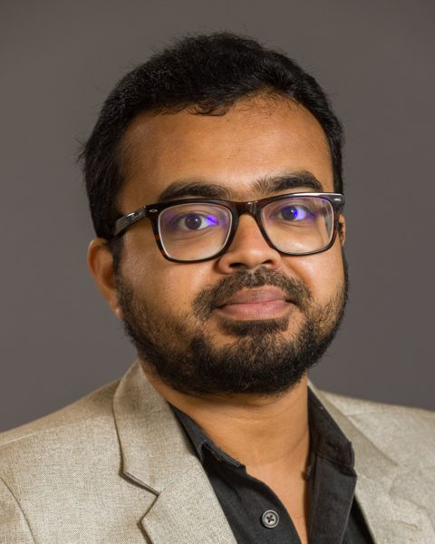

Electrochemical heavy-metal sensors
Electrode fabrication and modification, evaluated with cyclic voltammetry, impedance spectroscopy, and stripping voltammetry.

PhD Student · Micro- and Nanoscale Systems · Louisiana Tech University
I build electrochemical sensors that find heavy metals in water and biological samples at trace levels.
At the Advanced Materials Research Laboratory in Louisiana Tech's Institute for Micromanufacturing, I fabricate and characterize sensor electrode materials, then test how well they perform: sensitivity, selectivity, and detection limit. The goal is fast, low-cost detection of toxic metals in real water and biological samples.
My path here runs through materials and the environment: synthesizing polymer nanoparticles for agriculture, and studying heavy-metal contamination and waste treatment in Bangladesh's industrial zones.
Research supported by
Electrode fabrication and modification, evaluated with cyclic voltammetry, impedance spectroscopy, and stripping voltammetry.
Synthesis and characterization of functional hydrogel nanoparticles designed to carry a nitrification inhibitor. Characterized with DLS, NMR, FTIR, SEM, TEM, and TGA.
Heavy-metal risk assessment across soil, plants, and wastewater; chromium removal with biomass charcoal; biodiesel from tannery waste; municipal waste management.
Sahen, M. S., Naim, M. A. H. K., Hosen, M. S., Pranta, M. A., Hasan, M., Rahman, M. M., Rahman, S., & Don, A. W.
Environmental Monitoring and Assessment, 197(4), 397
Journaldoi.org/10.1007/s10661-025-13818-9Ahmed, S., Rian, I. R., Ahmed, H., Sadik, S., Bhowmik, P., Islam, M. A., Rahman, S., Hosen, M. S.
2nd International Conference on Textile Science and Engineering (ICTSE 2024), BUTEX, Dhaka
ConferenceTabassum, S., Ahmed, A., Rahman, S., Tithi, M. R., Mehjabin, M., Dristy, J. T.
Preprints 2024, 2024011557
Preprintdoi.org/10.20944/preprints202401.1557.v1Mirmotalebi, S., Rahman, S., Tithi, M. R., & Apu, I. K.
World Journal of Engineering and Technology, 12, 1–23
Journaldoi.org/10.4236/wjet.2024.121001Hashem, M. A., Hasan, M., Momen, M. A., & Rahman, S.
3rd International Conference on Mechanical, Industrial and Materials Engineering (ICMIME 2017), RUET, Rajshahi
ConferenceAdvanced Materials Research Laboratory, Institute for Micromanufacturing · Louisiana Tech University
Dept. of Biochemistry, Chemistry, and Physics · Georgia Southern University
Dept. of Biochemistry, Chemistry, and Physics · Georgia Southern University
Apex Footwear Limited · Gazipur, Bangladesh
Contact
Open to research collaborations, conference conversations, and questions about electrochemical detection of heavy metals.